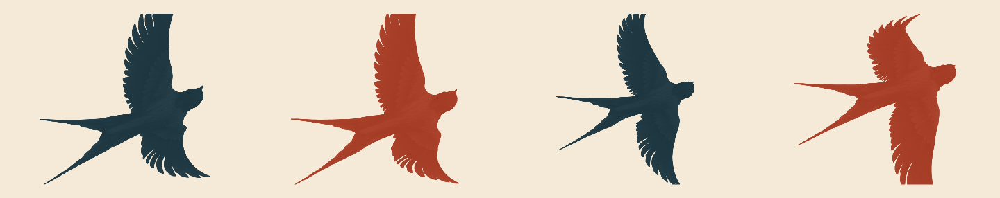
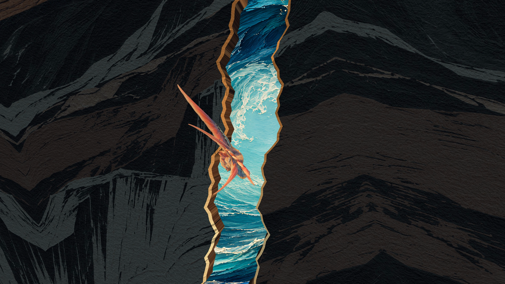

Sample the path at t ± 9 ms to get its tangent. Point the beak along it. Roll around that axis and tuck the wings independently.

The rig makes its own printsRender four wing poses to an offscreen texture. Stamp those silhouettes onto the hinged pages.

14.78 s · the ink fissureCheck the deformed mesh frame by frame. Minimum measured clearance at the fissure was 0.348 scene units.
04 / 06
RIPTIDE /Texture restoration
Why did the first 4K look soft?
The frame was 3840 × 2160, but each painting was 1672 × 941. Close to the lens, one soft gold stroke filled hundreds of pixels.
Six overlapping wave regions
6 + 4 + 2
Six wave, four rock and two sky repaints. Each ImageGen pass starts from its matching crop of the original.
Restore the base
Run Real-ESRGAN x4 on the lossless originals and the new detail paintings.
Register the marks
Match SIFT features, then use optical flow to pull the gold back onto the original edge.
Blend and remap
Feather the overlaps and keep the relief in surface UVs. The result is three 6688 × 3764 texture maps.
05 / 06
RIPTIDE /ImageGen prompt
What did I actually ask ImageGen?
This is the top-left corner of the wave. I gave ImageGen the crop as a reference, then used a registration script built with Codex to place its new brushwork.